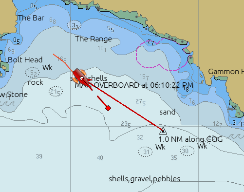
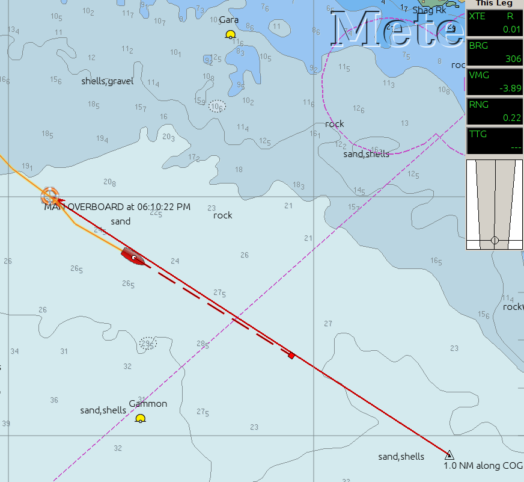
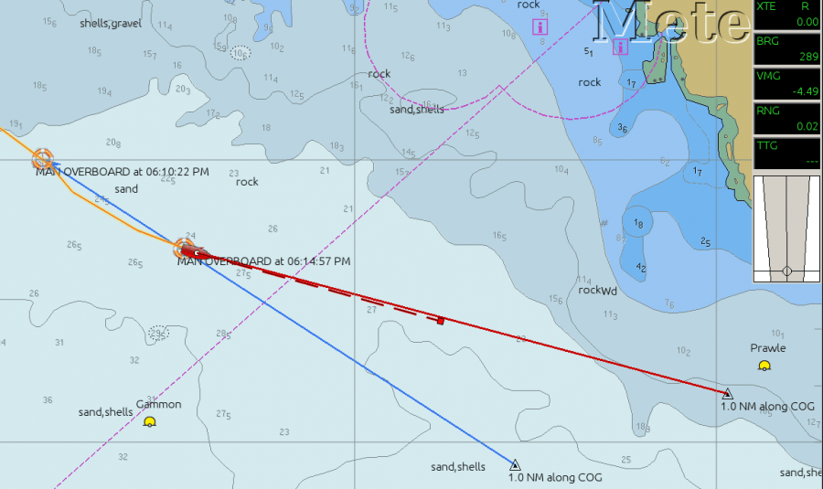
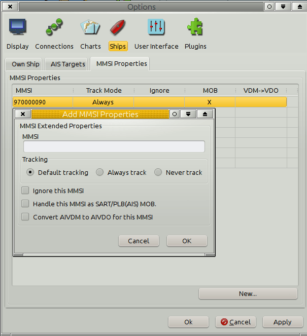

Man Over Board, MOB, can be handled manually, by pressing a button on the screen, or hit a shortcut key sequence.
Mob can also be handled automatically, or semi-automatically, provided that the crew is equipped with the right gear.
In any case …receiving a signal from an AIS SART or PLB will always generate an on screen alert, and sound a warning if this is set up. Read more about AIS SART .
Drop a Man Over Board Marker at your present position by pressing
* Man Over Board Button on the ToolBar. This button will always be furthest to the right among the buttons, for ease of finding.
or hit theKeys
*Ctrl + Space bar.
A mark, looking like the button is instantly created - the MOB mark.
The MOB mark will be called “MAN OVERBOARD at + time-stamp”
A temporary route, from a point 1 mile ahead on the current COG, and to the MOB mark is created and activated. On the screen, a course and bearing to the MOB mark will be displayed. This temporary triangular mark is labeled “1.0 NM along COG”.
If COG, course over ground, is not available, no route is created but the MOB position is marked. This can happen if no GPS is connected, if the GPS signal is (temporary) unavailable or if the speed is so low that the GPS doesn't calculate COG.
The MOB mark is persistent
If OpenCPN is shut down OpenCPN by mistake, and you have to restart, the MOB mark will still be there.
To delete a MOB
The temporary route can be deleted, through the right-click menu, but no action of the user with the mouse or keyboard will move or delete the MOB mark, except for a right click → Mark/Wpt Properties and select a different icon, and then delete the mark (ex mob mark) from the right click menu, or through the Route Manager. A MOB mark is not included in “Delete All” in the Toute Manager, to avoid mistakes. The mark has to be selected alone and then “Deleted”.
Multiple MOB marks can be deployed, and multiple temporary routes will be created. The active route will always be associated with the last dropped MOB mark.
Be very careful when using this capability in waters with strong tide or current.
The person overboard will not be at the position of the MOB mark for long. Both Own Boat and the person in the water will move with the current, but OpenCPN knows nothing about this.
The MOB mark has just been dropped

Own Boat has moved on and the MOB mark is 0.22 miles in bearing 306 degrees.
One option in this situation is to drag the triangle to the Own Boats position.

A second MOB mark is dropped.

This works if each person onboard has a personal “AIS-SART” or “PLB(AIS)” and carry them at all times.
The transponder must also be activated, either manually by the MOB or automatically.
OpenCPN should be set to treat the MMSI of the crew devices as MOB events.
Do this by going to Options→Ships→MMSI Properties→New and enter the MMSI number of a device.

Mark “Always track” and “Handle this MMSI as SART/PLB(AIS) MOB”, and press OK. Do the same thing for each AIS emergency device on board. They should now all appear in the list at the “MMSI Properties” tab.
Next set up Options→Ships→Ais Targets→“Play Sound on CPA/TCPA and DSC/SART emergencies” including “Select Alert Sound”.
With this setup a MOB will generate an alarm and OpenCPN will start a MOB event as described above under “MOB activated manually”.